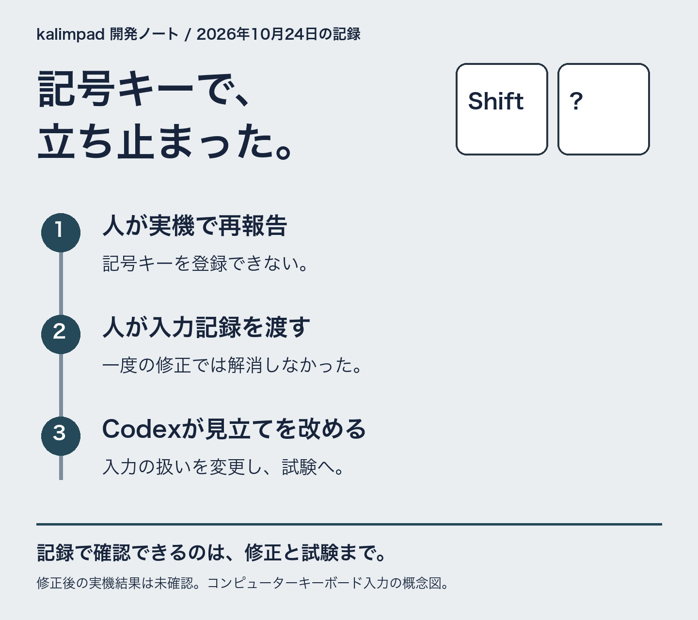

文字を打つキーを、演奏の入力にする。
kalimpadでは、外付けのコンピューターキーボードのキーを、パッドや演奏操作に割り当てられます。この記事は、その機能を作っていた2026年10月24日の記録です。MIDI鍵盤の接続ではなく、文字や記号を打つキーボードの入力を、楽器の演奏につなぐ開発でした。
まず、登録して試せる流れを作った。
作り手が承認したのは、左下のパッドから列ごとに、対応するキーを登録し、必要に応じて戻る・スキップする、試奏してから保存するという流れでした。Codexはキーの登録と保存を実装し、既存の演奏処理へ接続しました。キーを押し続けたときに入力が繰り返される扱いや、演奏を止める処理も試験しています。
ここまでの記録には自動試験の成功があります。ただし、それだけでは実際のキーボードで期待どおりに使えるかを確かめたことにはなりませんでした。
記号キーで登録が進まなかった。
作り手が実機で試すと、記号キーで登録が進まないという報告が入りました。Codexは入力の受け取り方を補う修正と試験を行いましたが、続く再報告では問題が残っていました。再ビルドした端末でも認識されないこと、異なる二つの記号が同じものとして扱われることが伝えられています。
開発は、一度の修正で終わっていません。入力の経路を整理して試験を追加した段階でも、実機で解消したという確認はまだありませんでした。

端末の記録で、最初の見立てを改めた。
そこで作り手が渡したのが、実際の端末から採取した入力の記録でした。Codexは、先に疑っていた設定の受け渡しは正常だと判断し、ShiftやOptionのような修飾キーを伴う入力の扱いへ、修正の焦点を移しました。
変えたのは、入力を登録するところだけではありません。修飾キーを含めて区別して保存し、キーを離すときにも対応する入力を扱うよう変更しました。人が実機で確かめた現象と端末の記録を渡し、AIがその証拠に合わせて実装を選び直した場面です。実際の会話や依頼文の全文は、ここでは再現していません。
記録で確認できるのは、修正と試験まで。
変更後は、記録に相当する入力、保存した内容の復元、キーを離す順序などの試験が成功したことを確認できます。一方、この修正後の実機で問題が解消したか、演奏しやすくなったか、遅延がどう変わったかは、参照した記録からは確認できません。
そのため、この開発を「AIが一度で直した」「キーボード演奏が快適になった」という成果には置き換えません。確認できる到達点は、実機での再報告を受けて見立てを改め、入力・保存・キーを離す処理を修正し、試験したところまでです。
別の入力機能を作るときへの提案。
文字入力を演奏などの操作へ使う場合、押したキーだけでなく、一緒に押したキーや離す順序も、試す操作として残しておくことを提案します。今回の記録では、そのような実機の具体的な情報が、最初に考えた原因を見直す根拠になりました。これは今後試せる工夫であり、すべての入力問題を解決する手順ではありません。